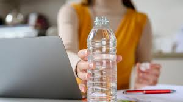

BroczDep
BroczDep
Hope this is valid
Nikolai M. Viray
February 2 2024 | 11:24pm
I have no idea who this is.
In a world inundated with health advice, one age-old recommendation remains steadfast: drink eight glasses of water a day. While skeptics may question the necessity of this guideline, a groundbreaking new study provides compelling evidence supporting the importance of staying hydrated.
Published in the prestigious Journal of Hydration Science, the study followed a diverse group of individuals over a six-month period, meticulously tracking their water intake and health outcomes. The results were astonishing: participants who consistently consumed eight glasses of water daily reported myriad benefits, ranging from increased energy levels to improved cognitive function.
Lead researcher Dr. Hydratio Phile emphasizes the significance of hydration in maintaining overall well-being. "Water is the essence of life," Dr. Phile explains. "Our bodies depend on it for virtually every physiological function, from regulating temperature to flushing out toxins. Ensuring adequate hydration is paramount for optimal health."
But why specifically eight glasses? According to the study, this quantity strikes the perfect balance between replenishing the body's fluids and preventing overconsumption, which can lead to water intoxication—a potentially dangerous condition.
Furthermore, proponents argue that water's benefits extend beyond physical health. Mental clarity, mood stability, and even weight management have all been linked to adequate hydration. "When you're properly hydrated, you simply feel better," says nutrition expert Dr. Aqua Thirst. "It's like giving your body a refreshing, internal shower."
Despite the study's compelling findings, some individuals remain unconvinced, citing conflicting advice and personal anecdotes. However, experts caution against dismissing the eight-glass recommendation prematurely. "While individual hydration needs may vary based on factors like age, activity level, and climate, the eight-glass guideline serves as a helpful baseline for most people," advises Dr. Thirst.
In a world filled with fad diets and trendy wellness trends, the timeless advice to drink eight glasses of water a day stands as a beacon of simplicity and reliability. So, the next time you reach for a beverage, remember the age-old wisdom: hydration is key to a healthy, vibrant life.
The Truth About Hydration: Why 8 Glasses a Day Matters
Why Hydration Matters:
Water is the elixir of life, vital for our bodies' countless functions, from temperature regulation to digestion. Dehydration can lead to a range of issues, from mild fatigue to severe organ damage.
Finding the Right Balance:
The recommendation of eight glasses a day strikes a balance between providing enough fluid for our bodies' needs without overwhelming the system. It's a manageable goal for most people.
Dispelling Myths:
Contrary to popular belief, all fluids count toward your daily intake, including coffee and tea. However, moderation is key, especially with caffeinated beverages.
Tailoring to Individual Needs:
Hydration requirements vary based on factors like activity level, climate, and health status. Athletes and those in hot climates may need more fluids.
Simple Tips for Staying Hydrated:
- Carry a reusable water bottle for easy access.
- Set reminders to drink throughout the day.
- Flavor water with fruits or herbs for added appeal.
- Eat water-rich foods like fruits and vegetables.
- Listen to your body's signals—thirst is a sign you need fluids.
By prioritizing hydration and following these tips, you can enjoy the benefits of staying properly hydrated. Cheers to eight glasses a day—for a healthier you.